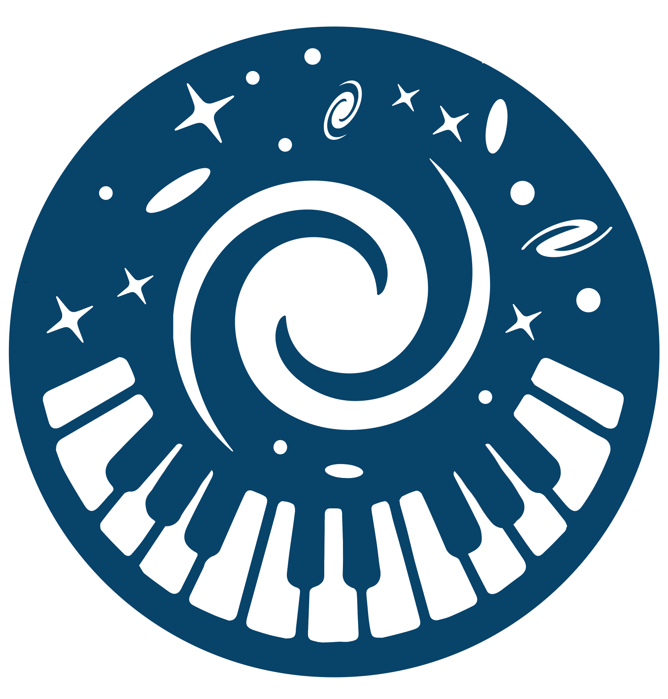
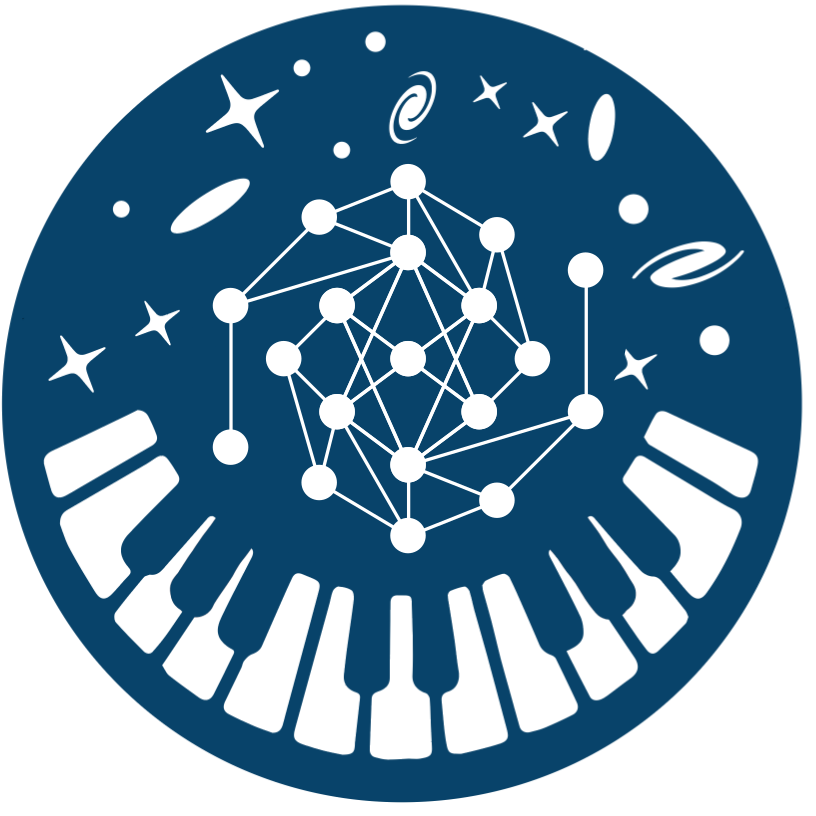
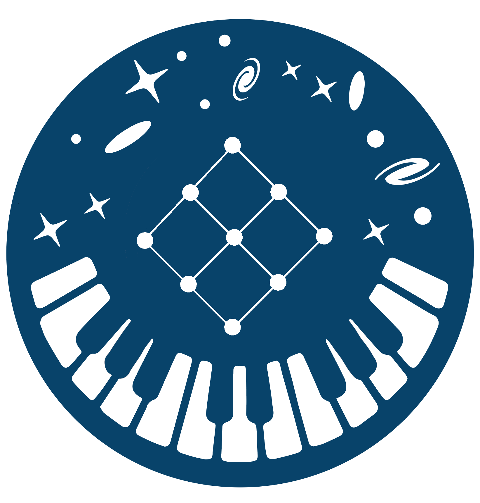
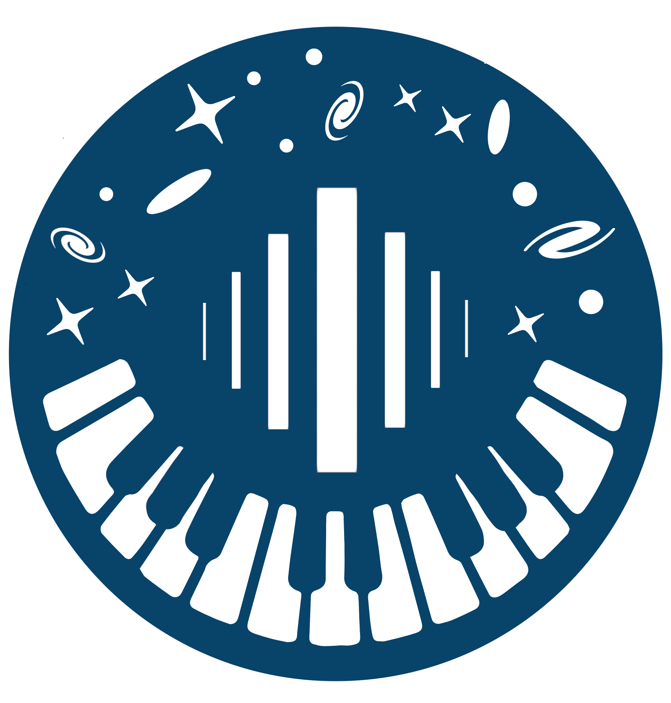
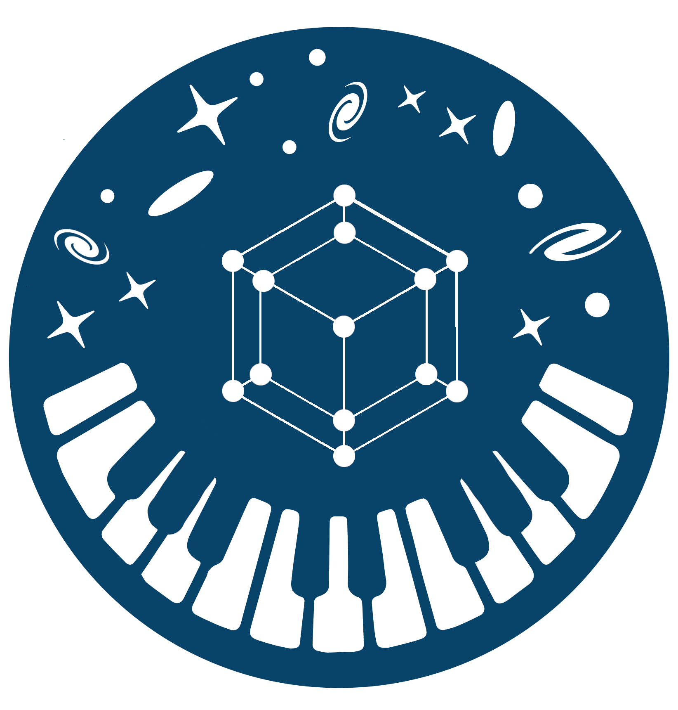

synthesizer-project.github.io
The Synthesizer Project
An open source suite of tools for forward and inverse modelling of astrophysical observables

Synthesizer
Fast and flexible generation of astrophysical observables

Synference
A Spectral Energy Distribution fitting code utilising Simulation Based Inference

Syncretize
Stellar, AGN and photoionisation processed grid generation scripts

Syntillate
Score-based diffusion noise model for realistic photometric mock catalogues
Synthia
An agent skill and MCP server answering Synthesizer questions from your local installation

Symulacra Soon
A Differentiable Emulator for Emission Grids